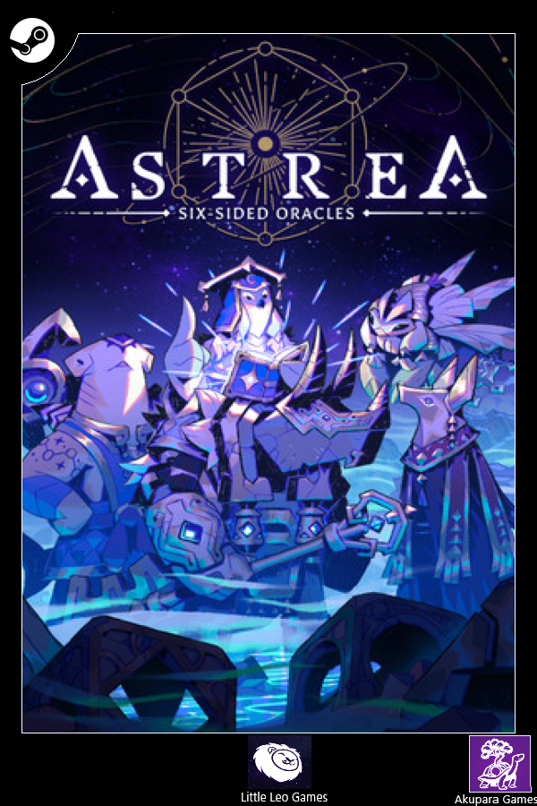

Astrea Six Sided Oracles
Astrea Six Sided Oracles
Detalhes
|  | |
| Tempo de jogo | Não Jogado |
| Última Atividade | Nunca |
| Adicionado | 09/03/2025 23:13:15 |
| Modificado | 10/03/2025 1:01:45 |
| Status de Conclusão | Not Played |
| Biblioteca | Epic |
| Fonte | Epic |
| Plataforma | PC (Windows) |
| Data de Lançamento | 21/09/2023 |
| Pontuação da Comunidade | |
| Avaliação da crítica | 80 |
| Pontuação do Usuário | |
| Gênero | Deckbuilder Roguelike RPG Strategy |
| Desenvolvedor | Little Leo Games |
| Editor | Akupara Games |
| Funções | Single Player |
| Links | PCGamingWiki Official site GOG Database HowLongToBeat IGDB ProtonDB SteamDB MobyGames Wikipedia |
| Tag | [HLTB] 10 a 20 horas Cartoon Fantasy No Cloud Saves Turn-Based Unity |
Descrição
Long ago -- when ancient ruins were once flourishing civilizations and their populace lived in idyllic bliss – a mystical star governed all. Loyal disciples, called Six-Sided Oracles, were blessed by their star, granting them the strength to seal away the gift of heavenly bodies within mystic relics. All was perfect and harmonious. Until that one fateful day – The Crimson Dawn Cataclysm. A ferocious inferno sundered down from the sky, engulfing the entirety of the star system, crumbling the foundations of their society and corrupting the souls of the weak-willed. The disciples of the star were lost to the chaos – their creations scattered across a vast world of ruin. Could there still exist those who were capable of wielding their power? Eons later, brave young scions awoke to a mysterious call beckoning them to the ruins of the ancient disaster. It is there they find the lost six-faced relics of legend and writings detailing the original Six-Sided Oracles, a vengeful deity, and a Corruption Plague. The new Six-Sided Oracles embark on a journey to save their star system and search for the secrets of their destructive history.